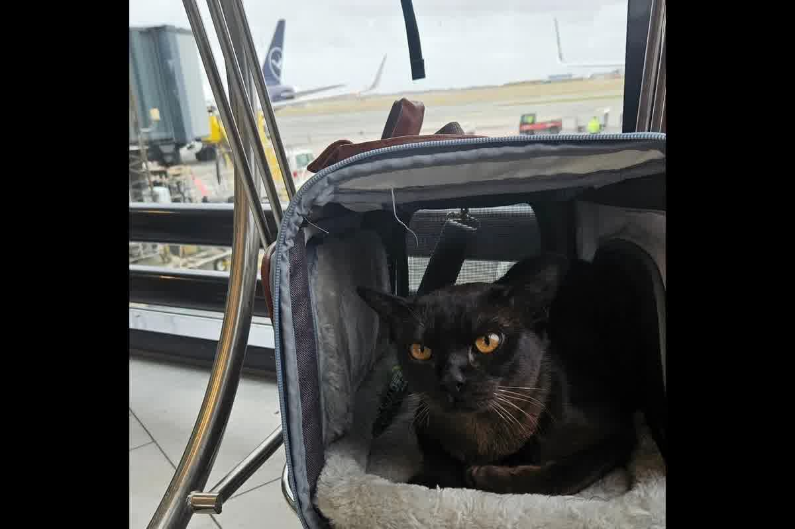
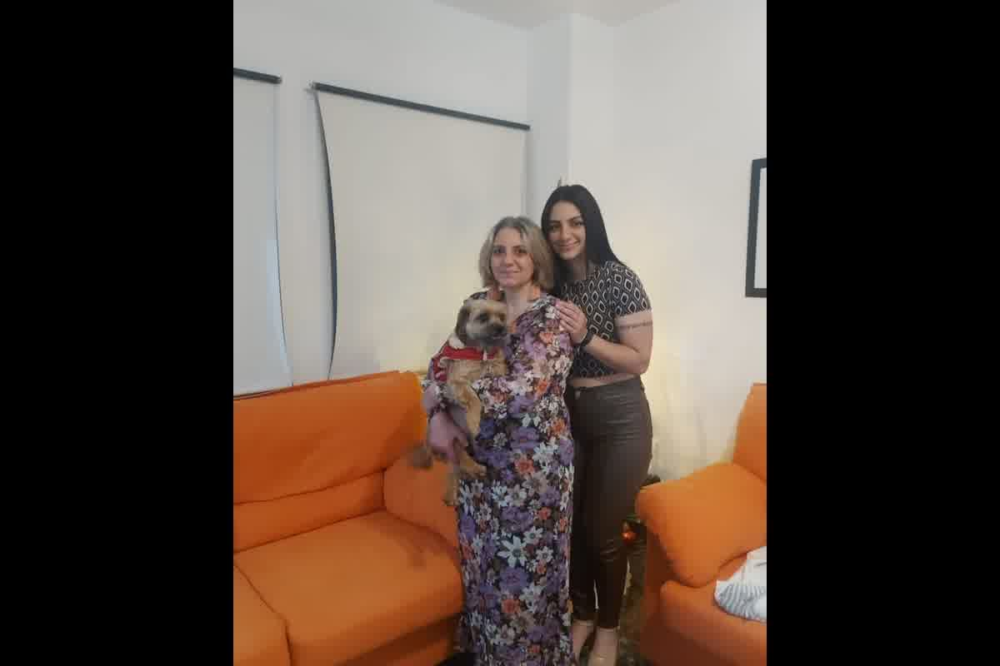

Guide technique pour l'exportation de chiens et chats du Pérou vers le Canada. Exigences en matière de micropuces, vaccination contre la rage et gestion des risques logistiques.

Le Canada est l'une des destinations les plus accessibles : pour les chiens et chats, il n'exige ni quarantaine ni titrage sérologique RNATT. L'exigence centrale est un certificat de vaccination antirabique valide, émis par un vétérinaire et identifiant l'animal (l'autorité canadienne, l'ACIA/CFIA, le vérifie à l'entrée). La puce est fortement recommandée pour lier l'animal à ses documents, et depuis le Pérou il vous faut aussi le certificat de santé et le certificat zoosanitaire d'exportation du SENASA pour quitter le pays. Il existe des nuances selon l'âge de l'animal et selon que le voyage est commercial ou un déménagement, et les compagnies aériennes ont leurs propres règles de transport. Confirmez toujours les exigences en vigueur de la CFIA avant de voyager.
La plus grande erreur lorsqu'on planifie un déménagement au Canada est de croire que les règlements officiels de l'ACIA suffisent à garantir le voyage. Le Canada est l'une des destinations les moins restrictives au monde au niveau documentaire, mais cette flexibilité est un piège logistique. Si l'animal arrive au comptoir de la compagnie aérienne sans la traçabilité technique exigée par le transporteur, l'embarquement est stoppé, indépendamment de ce qu'en dit le site Internet du gouvernement canadien.
Techniquement, le Canada n'exige pas que les animaux de compagnie personnels soient micropucés pour entrer dans le pays. Cependant, à Trujillo, nous voyons fréquemment des familles arriver à l'aéroport et se heurter au refus de la compagnie aérienne. Les compagnies de transport aérien exigent une identification sans équivoque pour la traçabilité de l'animal lors des escales et de la manutention en entrepôt. Essayer de voyager sans appareil de mauvaise qualitéISO 11784/11785 FDX-BC'est une négligence administrative qui se solde par des vols perdus.
L’implantation d’une puce devrait être la première étape absolue. Toute intervention médicale ultérieure, notamment la vaccination contre la rage, doit être liée à ce code à 15 chiffres. D'après notre expérience clinique, un certificat sanitaire qui ne comprend pas le numéro de micropuce vérifié par le vétérinaire n'a aucune valeur pour le système de sécurité aérienne internationale. Le processus d'identification est détaillé dans notre Puce électronique d’identification animale : fondement technologique, cadre réglementaire international et traçabilité sanitaire.

Le Canada classe le Pérou comme pays à risque de rage. Cela implique que le vaccin doit être à jour, mais il existe un critère de temporalité que de nombreux propriétaires omettent faute de conseils techniques. Bien que la notice d'un vaccin indique qu'il protège pendant un an, la validité internationale d'entrée n'est activée que 21 jours après la primovaccination. Si l'animal voyage le 20, l'ACIA a le pouvoir d'ordonner une vaccination à la frontière aux frais du propriétaire ou, dans les cas extrêmes, l'expulsion.
Il ne s’agit pas seulement d’avoir un cachet sur la carte. L'autorité sanitaire canadienne exige que le certificat de vaccination précise la marque déposée, le numéro de lot et la date de péremption de la dose utilisée. Chez Zoovet Travel, nous avons géré des dossiers où l'illisibilité d'un numéro de lot était la raison d'une observation documentaire au point d'entrée à Toronto. La précision technique de l'enregistrement est ce qui différencie une procédure réussie d'un maintien de la santé.
S'installer au Canada signifie tenir compte des conditions météorologiques extrêmes, non seulement à destination, mais aussi pendant le transit. Le transport de chiens brachycéphales (carlins, bouledogues) vers les climats canadiens présente de graves risques métaboliques en raison de l'incapacité de ces animaux à se thermoréguler en haletant. Lors des escales, où les températures des pistes peuvent être imprévisibles, le risque de coup de chaleur augmente de façon exponentielle si la condition physique du patient n'a pas été évaluée au préalable.
En consultation, nous évaluons si le patient présente des signes de BOAS (syndrome obstructif des voies aériennes chez les brachycéphales) avant de délivrer un certificat de santé. Un chien qui n'est pas physiologiquement préparé à faire face à la légère hypoxie de la cabine et au stress métabolique du voyage ne devrait pas voler, même s'il répond à toutes les exigences. La sécurité biologique de l’animal prime sur tout planning de déplacement personnel.
La gestion documentaire au Pérou nécessite de passer par le filtre SENASA. Le certificat vétérinaire officiel d'exportation (CZE) est le document final qui résume l'ensemble de l'histoire clinique et sanitaire de l'animal. Ce document a une validité limitée et doit correspondre exactement aux données du propriétaire voyageur. Toute divergence dans le nom ou l'adresse de destination au Canada invalidera le dossier au contrôle douanier.
Le dossier d'exportation n'est pas un dossier de papiers accumulés, mais une chaîne logique d'événements médicaux vérifiables. Du vermifugation interne contre les parasites absents au Canada jusqu'à l'examen clinique final qui garantit que l'animal est indemne de maladies infectieuses. Manquer une seule information dans cette chaîne signifie que le processus doit être recommencé à zéro, ce qui prend souvent des semaines dont le voyageur ne dispose pas.
Une erreur dans le numéro de micropuce ou la date de vaccination peut entraîner la mise en quarantaine forcée ou le retour de votre animal du Canada. Zoovet Travel gère la chaîne documentaire complète et les vérifications techniques nécessaires pour éviter les refus aux aéroports et aux douanes. Assurez le voyage de votre animal avec un jugement médical et non avec des hypothèses Internet.
Chaque voyage avec un animal est unique. Voici les doutes les plus courants — et pourquoi nous recommandons toujours de consulter votre cas particulier.
Non. Chaque pays fixe ses propres exigences : vaccins, tests de laboratoire, certifications officielles et délais d'attente qui, dans de nombreux cas, ne peuvent être raccourcis en aucune circonstance. Ce qui est valable pour une destination peut être insuffisant ou même incompatible avec une autre. Avant d'entamer toute démarche, évaluez votre cas avec nous.
Non. Les politiques varient selon la compagnie, la route, le type d'appareil et la saison, et changent fréquemment. Les races brachycéphales font face à des restrictions supplémentaires sur la plupart des compagnies internationales. Avant d'acheter votre billet, vérifiez la compatibilité exacte pour votre route et votre animal.
Cela dépend de la destination. Certains protocoles incluent des tests de laboratoire avec des délais d'attente obligatoires qui ne peuvent pas être raccourcis. Commencer trop tard peut invalider la documentation déjà obtenue ou obliger à reprogrammer entièrement le voyage. Écrivez-nous et nous calculerons ensemble votre calendrier réel.
L'animal peut être retenu dans les installations de l'aéroport, placé en quarantaine obligatoire aux frais du propriétaire, ou rapatrié. Dans les destinations avec des mesures de biosécurité strictes, les conséquences peuvent être encore plus graves. La vérification documentaire avant le voyage est le seul moyen d'éviter ce scénario. Contactez-nous avant de voyager.